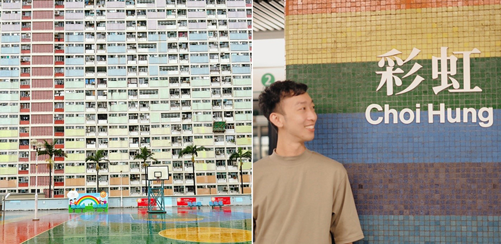
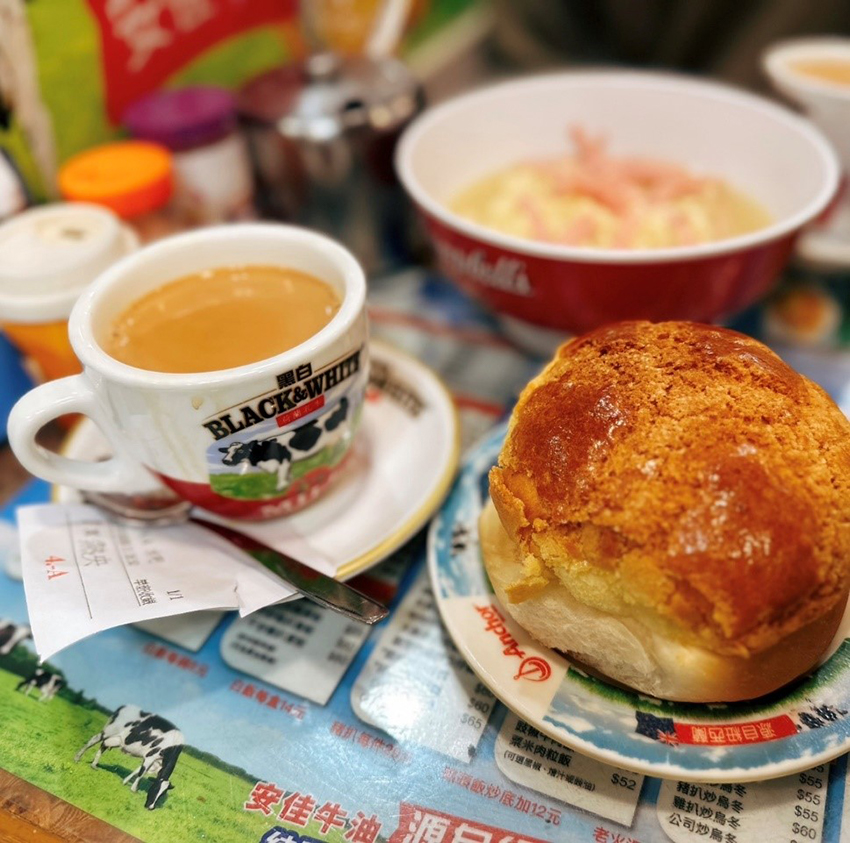
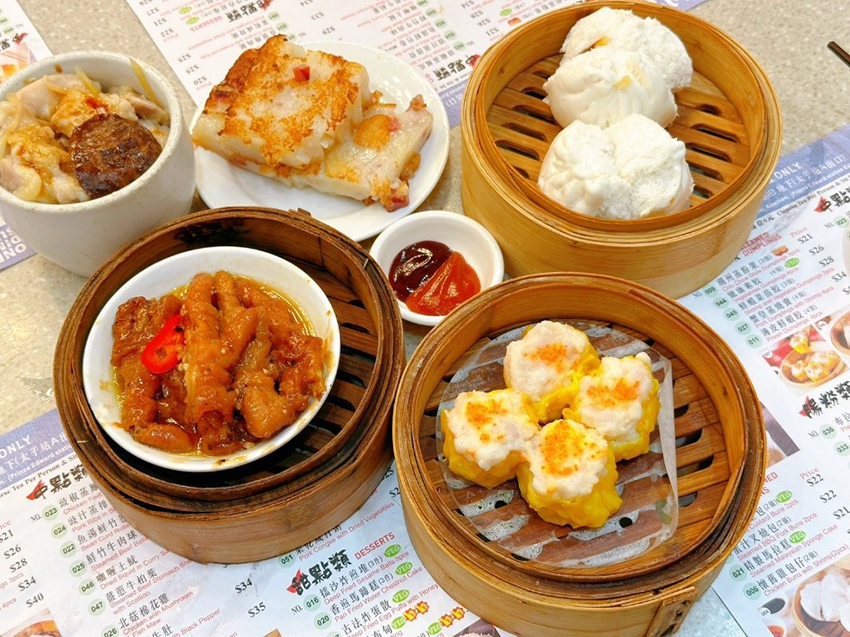
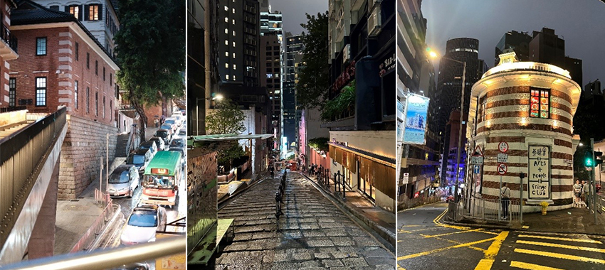
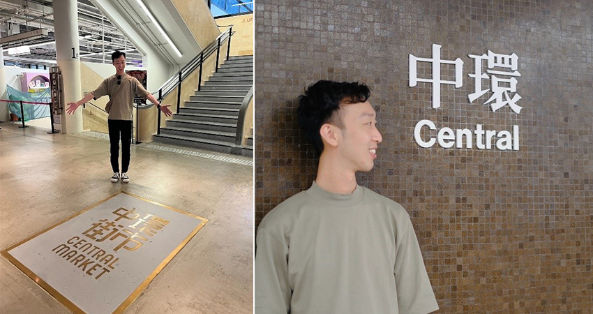
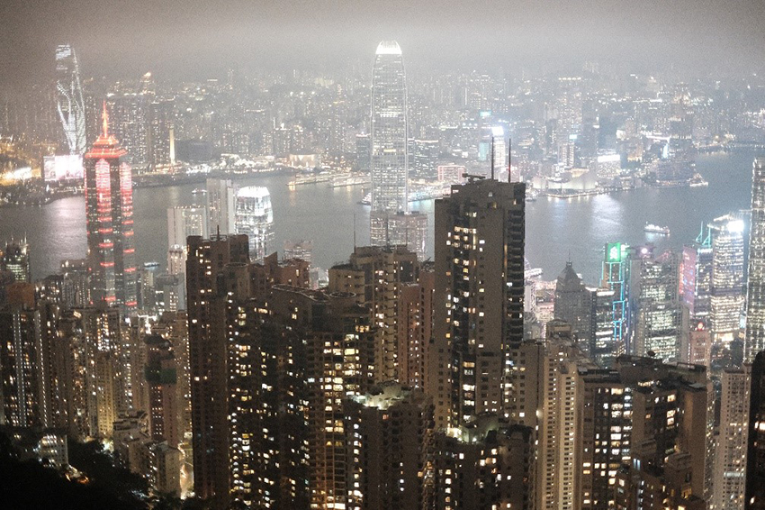

原本想把握今年最後的連假，來趟香港快閃之旅，結果……沒想到，沒讓我放到颱風假的小犬，竟然跟隨著我的腳步，在我登上香港的隔天，也登陸了香港，讓我在香港放了整整一天颱風假。
👉 藏在城市裡的彩虹－彩虹郡
小犬的到來，打亂了我們原本的行程，心裡還是想著難得都到了香港了，還是得發揮觀光客精神，時不時滑著新聞，關注地鐵或公車有沒有停駛，幸運地，公車雖然停駛了，但地鐵還不受影響，照常運作載客，此時趁著風雨還不大跑去了＂彩虹邨＂，想不到傳說中的網美景點，竟然是闖入了民宅區裡的一個停車場頂樓的籃球場，走上樓也發現了還是有著跟我們一樣熱血的人，撐著雨傘也要拍下這香港代表性的場景。
|  |
👉 突如其來的颱風假－八號風球
小犬逼近，也漸漸地在耳邊聽到了＂八號風球＂這個名詞，原本不明白＂風球＂的意思，查了一下就是台灣的颱風警報，隨著警報發布，馬路上的公車或者是店家也陸續地關閉，更特別的是，百貨公司開著，但裡面的店家都沒開，第一次遇到這樣的場景。就在我們好不容易找到了一間餐廳，吃到一半的時候，竟然被店員告知，＂九號風球＂即將發布，叫我們趕快吃，他們要關門了，才知道原來這就是他們更強烈的颱風，只剩下室內的地鐵也運作，其他都暫停了。
幸運在第三天中午，從八號風球，轉降為＂六號風球＂，這就是我們說認知的熱帶性低氣壓，非颱風等級了。原來在香港如果在中午前降成六號風球後，在2小時後就要開始上班，如此緊湊的步調，真的是蠻特別的。
👉 如此令人難忘的美食－港點
隨著警報解除，交通工具也陸續地回復正常運作，當然我們也繼續開啟解鎖香港景點，繼續踏上香港旅程，然而風雨依舊強大，與朋友滾動式調整一下原本安排好的行程，把一些想去的景點，調整為走室內及美食之路，對於美食最想推薦的就是＂金華冰室＂的菠蘿油，吃完一個不夠滿足，本來想再吃第二個，但因為下一個行程排＂一點心＂也是香港非常港點，旅客必吃之店，所以就沒再衝動點第二個菠蘿油，把胃口留給下一餐，對於＂一點心＂吃完也是記憶猶存。
|  |
|  |
👉 踏上最有老香港味的街頭－中環
中環街景如此令人印象深刻，中環除了是香港的金融中心之外，街頭上也充滿著舊有殖民時期的色彩，別有一般氣息，像是大館或者是石板街，都讓人有瞬間置身在歐洲街頭的感覺，也因為下著雨的原因，我們到了中環街市，逛逛室內行程，中環街市於1939年落成，大概有80年歷史，屬於三級歷史建築，傳承歷史建築文化，這也代表著香港時代變遷。經活化後，中環街市樓高三層，採開放式設計，集合本地生活品牌、酒吧餐廳、掃街小食、藝術展覽等……. 同時中環街市還保留了不少舊街市風光，水磨石主樓梯，應該也算遊客來香港旅遊，必踩的景點之一。
|  |
|  |
👉 百萬香港夜景－太平山夜景
這趟旅程最值得慶幸的是，＂山頂纜車＂也隨著警報解除，而開放了，這應該也是我這趟旅程最期待的景點之一，乘著山頂纜車，慢慢爬坡道終點站，就是俯瞰香港夜景的觀景台，傳說中的太平山夜景，就這樣映入眼簾了，能看到這個夜景這趟旅程都值得了，所以跟朋友們也不畏風雨，在太平山上也是用盡力氣在拍照，希望能拍出如此美麗的照片，讓這趟旅行不要留下遺憾，撫慰了被小犬打亂行程的心情了。
|  |